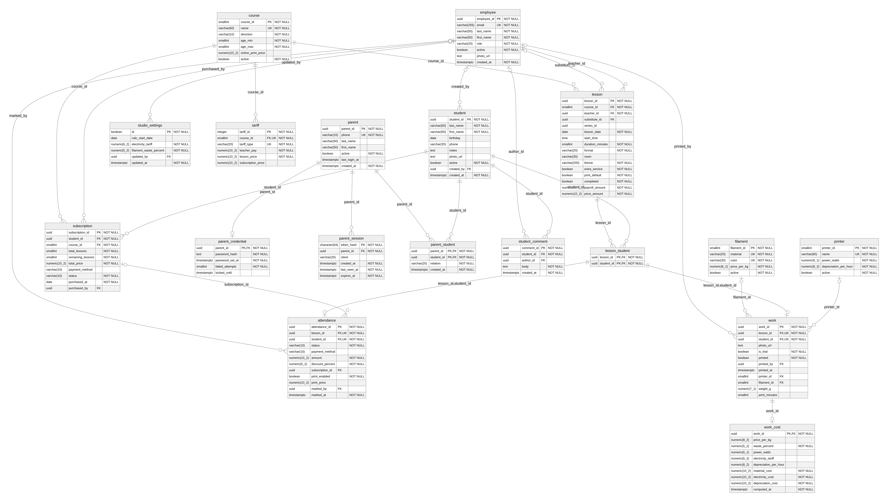

Лабораторна робота № 2
Створення моделі даних в середовищі СУБД
Логічна модель з ЛР1 стала фізичною схемою stemik у навчальному проєкті Supabase (PostgreSQL): таблиці з типами даних, первинні й зовнішні ключі, обмеження цілісності та каскадні дії. Усе нижче сайт отримує з системного каталогу бази.
Завантаження даних з бази…
Фізична схема

Перевірка обмежень цілісності
Функція lab_lr2_constraint_tests() виконує 10 операцій, що порушують правила або запускають каскадні дії. Кожна виконується у власному підблоці, і всі зміни відкочуються — дані не змінюються.
Матеріали етапу
Протокол ЛР2 (PDF) Протокол ЛР2 (Word) Презентація ЛР2 SQL етапу ЛР2